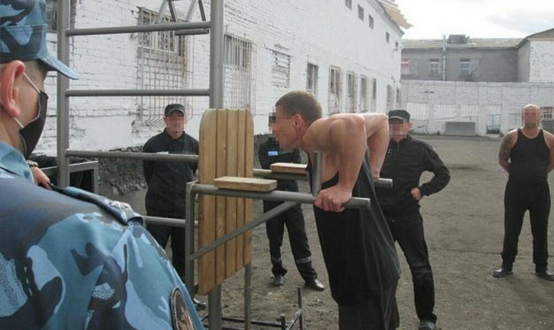
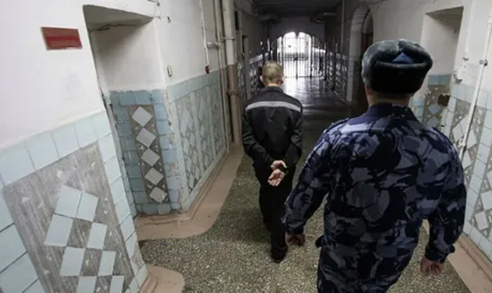
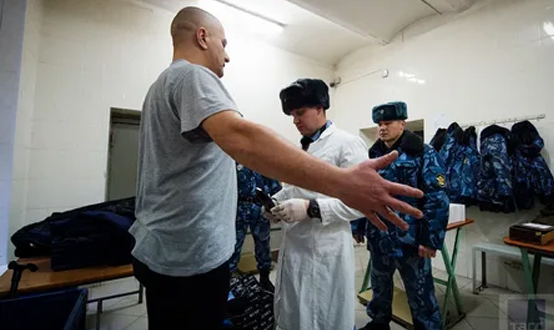

К преступлениям против жизни относят преступления, предусмотренные статьями 105–110.2. УК РФ.
Убийство
Право на жизнь является базовым правом человека, его ограничение допустимо только со стороны государства за совершение особо тяжких преступлений (в виде смертной казни). Поэтому лишение жизни – убийство, за исключением привилегированных его видов, отнесено законом к особо тяжким преступлениям.
ЦИТАТА
Убийство – это противоправное умышленное причинение смерти другому человеку.
Не является убийством причинение смерти другому человеку, совершенное при отсутствии хотя бы одного из указанных признаков: противоправности (например, лишение жизни человека в состоянии необходимой обороны, если при этом не превышены ее пределы) либо умышленного отношения к содеянному и его последствиям (например, причинение смерти по неосторожности). Не является убийством лишение жизни человеком самого себя, т.е. самоубийство.
Уголовный кодекс предусмотрел следующие виды убийства:
1) простое – без отягчающих и без смягчающих обстоятельств. (ч. 1 ст. 105 УК). Объектом убийства является жизнь человека – совокупность психофизиологических процессов, происходящих в организме (обмен веществ, самообновление, нервная деятельность и т.д.). Моментом начала жизни в российском законодательстве считается момент отделения плода от организма матери посредством родов, моментом окончания – гибель всего головного мозга (биологическая смерть), установленная медицинским работником.
Объективная сторона убийства характеризуется причинением смерти другому человеку и складывается из трех элементов: а) деяние (действие либо бездействие – выстрел, удар ножом, удушение, или пассивное поведение – например, отказ со стороны матери в кормлении новорожденного ребенка); б) преступные последствия в виде биологической смерти лица; в) причинная связь между деянием и названным последствием. Время, место, обстановка, способ совершения убийства, как правило, не влияют на квалификацию содеянного, за исключением ситуаций, когда они названы законодателем в качестве отягчающих или смягчающих обстоятельств в ч. 2 ст. 105, ст.106—108 УК (например, общеопасный способ, особая жестокость при совершении деяния и т.п.).
Субъективная сторона убийства – прямой или косвенный умысел. Цели, мотивы, эмоции при совершении преступления могут быть любыми, некоторые из них также учитываются законодателем при конструировании квалифицированных и привилегированных составов убийства в ч. 2 ст. 105, ст. 106—108 УК (например, мотив мести, мотив сострадания).
Субъектом простого убийства могут быть физические вменяемые лица, достигшие 14-летнего возраста;
2) квалифицированное, т.е. совершенное при наличии отягчающих обстоятельств, указанных в п. «а»–«н» ч. 2 ст. 105 УК.
Первая группа таких обстоятельств — обстоятельства, характеризующие объективные свойства преступления (объект и объективную сторону):
- убийство двух или более лиц (п. «а») – одновременно либо с незначительным разрывом во времени, но охватываемое единым умыслом виновного;
- убийство малолетнего или иного лица, заведомо для виновного находящегося в беспомощном состоянии, а равно сопряженное с похищением человека (п. «в»). Беспомощность – это неспособность лица в силу определенных психофизиологических свойств принять меры к самосохранению или оказать сопротивление виновному. Беспомощность может быть физической (в силу тяжелых заболеваний, паралича, отсутствия конечностей, престарелого возраста, малолетства, лишения свободы передвижения не может противодействовать убийце) и психической (психическое расстройство, состояние опьянения и т.п.). Беспомощность потерпевшего должна быть заведомой для виновного, т.е. последний должен сознавать, что лишает жизни беспомощного человека;
- убийство женщины, заведомо для виновного находящейся в состоянии беременности (п. «г»). При квалификации деяния в данном случае необходимо установить, что виновный был осведомлен о беременности потерпевшей (по внешним признакам, ввиду ознакомления с документами или сообщения самой потерпевшей), срок беременности значения не имеет;
- убийство, совершенное с особой жестокостью (п. «д») – с причинением потерпевшему особых физических страданий (лишением пищи, пытками, истязанием и т.п.), с нанесением потерпевшему большого числа ран, убийство в присутствии близких потерпевшему лиц и т.п.;
- убийство, совершенное общеопасным способом (п. «е») – способом, объективно опасным для жизни посторонних лиц (взрыв, поджог, организация аварии, наезд транспортным средством на группу людей и др.). Виновный должен осознавать, что применяемый им способ убийства создает реальную опасность для жизни других лиц, помимо того или тех, кому он намерен причинить смерть;
- убийство, совершенное группой лиц, группой лиц по предварительному сговору, организованной группой (п. «ж»). Для квалификации данного деяния необходимо, чтобы в нем участвовали лица, заранее договорившиеся о совместном лишении жизни потерпевшего.
Вторая группа — обстоятельства, характеризующие субъективные свойства убийства (субъективную сторону и субъекта):
- убийство лица или его близких в связи с осуществлением данным лицом служебной деятельности или выполнением общественного долга (п. «б»). В данной ситуации убийство квалифицирует мотивация поведения виновного — его стремление воспрепятствовать осуществлению служебной деятельности или общественного долга либо отомстить за их выполнение;
- убийство по мотиву кровной мести (п. «е.1»);
- убийство из корыстных побуждений или по найму, а равно сопряженное с разбоем, вымогательством или бандитизмом (п. «з»);
- убийство, совершенное из хулиганских побуждений (п. «и») – на почве явного неуважения к обществу, нормам морали и человеческого общежития (например, убийство ножом случайного прохожего, с которым преступник был ранее не знаком);
- убийство, совершенное с целью скрыть другое преступление или облегчить его совершение, а равно сопряженное с изнасилованием или насильственными действиями сексуального характера (п. «к») – например, убийство свидетеля, убийство жертвы изнасилования;
- убийство по мотиву национальной, расовой, религиозной ненависти или вражды либо кровной мести (п. «л»);
- убийство, совершенное в целях использования органов или тканей потерпевшего (п. «м»).
Субъектом квалифицированного убийства могут быть физические вменяемые лица, достигшие 14-летнего возраста;
3) привилегированное, т.е. совершенное при наличии смягчающих обстоятельств, указанных в ст. 106—108 УК РФ:
- убийство матерью новорожденного ребенка (ст. 106 УК) – во время или сразу же после родов; в состоянии психического расстройства, не исключающего вменяемости; в условиях психотравмирующей ситуации (например, отсутствие жилья, средств к существованию, отказ отца ребенка от регистрации брака, увольнение с работы, связанное с рождением ребенка, гибель супруга и т.д.). Подобные ситуации, воздействуя на травмированную процессом деторождения психику женщины, вызывают состояние аффекта, эмоциональный всплеск, которые могут привести к не вполне подчиненной волевому контролю реакции в виде разрядки в действие (здесь — в убийстве младенца). Это убийство также может быть совершено в течение одного месяца с момента рождения ребенка. Рассматриваемое преступление может быть совершено путем действия (например, удушение, нанесение ранений и т.д.) либо путем бездействия (например, отказ от кормления);
- убийство, совершенное в состоянии аффекта (ст. 107 УК). Аффект — особое эмоциональное состояние, бурно протекающий эмоциональный процесс, который может найти выход в разрядке в виде действия, не подчиненного сознательному волевому контролю. Аффект может быть двух видов: патологический и физиологический. При патологическом аффекте лицо полностью утрачивает способность сознательно контролировать свои действия, и это состояние свидетельствует о невменяемости лица. При физиологическом аффекте сохраняется в какой-то степени способность самообладания; и хотя волевой контроль над своими действиями у лица занижен, он все-таки есть. Подобное состояние не исключает вменяемости лица, но признается законодателем обстоятельством, значительно снижающим степень общественной опасности убийства, им совершенного. Наличие состояния физиологического аффекта должно констатироваться заключением психолого-психиатрической экспертизы. Поводами возникновения аффекта являются проявления противоправного либо аморального поведения потерпевшего: насилие, издевательство, тяжкое оскорбление, преступные посягательства (на собственность, изнасилование и др.), аморальные действия (измена на глазах супруга, предательство друга и др.), длительная психотравмирующая ситуация (неоднократное совершение потерпевшим противоправных деяний или аморальных поступков);
- убийство, совершенное при превышении пределов необходимой обороны либо при превышении мер, необходимых для задержания лица, совершившего преступление (ст. 108 УК). Превышением пределов необходимой обороны признается явное, очевидное несоответствие защиты характеру и опасности посягательства, когда посягающему без необходимости умышленно причиняется смерть. Превышением мер, необходимых для задержания лица, совершившего преступление, признается их явное несоответствие характеру и степени общественной опасности совершенного задерживаемым лицом преступления и обстоятельствам задержания, когда лицу без необходимости причиняется явно чрезмерный, не вызываемый обстановкой вред.
Субъектом привилегированного убийства являются физические вменяемые лица, достигшие 16-летнего возраста.
Причинение смерти по неосторожности
Причинение смерти по неосторожности (ст. 109 УК) не считается убийством ввиду отсутствия умысла. Однако объектом преступления так же выступает жизнь человека. Объективная сторона: действие или бездействие, нарушающее какое-либо правило предосторожности, совершенное в результате пренебрежения мерами осмотрительности, выработанными в процессе человеческого общения, повлекшее за собой наступление смерти человека. Виновное лицо в подобных ситуациях либо пренебрегает какими-либо правилами, не соблюдает их (бездействие), либо допускает грубое их нарушение, выполняет их требования не должным образом (действие).
Субъективная сторона — вина в форме неосторожности. Неосторожность при этом может выступать как в виде легкомыслия, так и в виде небрежности. Законодатель не дифференцирует ответственность за рассматриваемое деяние в зависимости от вида неосторожности.
Субъект — физическое вменяемое лицо, достигшее 16-летнего возраста. Часть 2 ст. 109 УК предусматривает ответственность за квалифицированные виды причинения смерти по неосторожности: совершение деяния вследствие ненадлежащего исполнения лицом своих профессиональных обязанностей; причинение смерти по неосторожности двум или более лицам.
Доведение до самоубийства
Доведение до самоубийства (ст. 110 УК) наказуемо для лица, умышленно провоцирующего потерпевшего совершить самоубийство.
Объект преступления — жизнь человека. Объективная сторона доведения до самоубийства складывается из деяния лица (действие либо бездействие), провоцирующего потерпевшего совершить самоубийство (угроз, жестокого обращения либо систематического унижения человеческого достоинства), и преступных последствий в виде самоубийства потерпевшего или покушения на самоубийство.
Субъективная сторона преступления характеризуется умышленной виной в виде прямого либо косвенного умысла.
Субъект — физическое вменяемое лицо, достигшее 16-летнего возраста.
Отдельными статьями предусмотрена ответственность за склонение к совершению самоубийства или содействие совершению самоубийства (путем уговоров, предложений, подкупа, обмана или иным способом при отсутствии признаков доведения до самоубийства; содействие совершению самоубийства советами, указаниями, предоставлением информации, средств или орудий совершения самоубийства и т.п. – ст. 110.1. УК) и организация деятельности, направленной на побуждение к совершению самоубийства (путем распространения информации о способах совершения самоубийства или призывов к совершению самоубийства – ст. 110.2. УК).